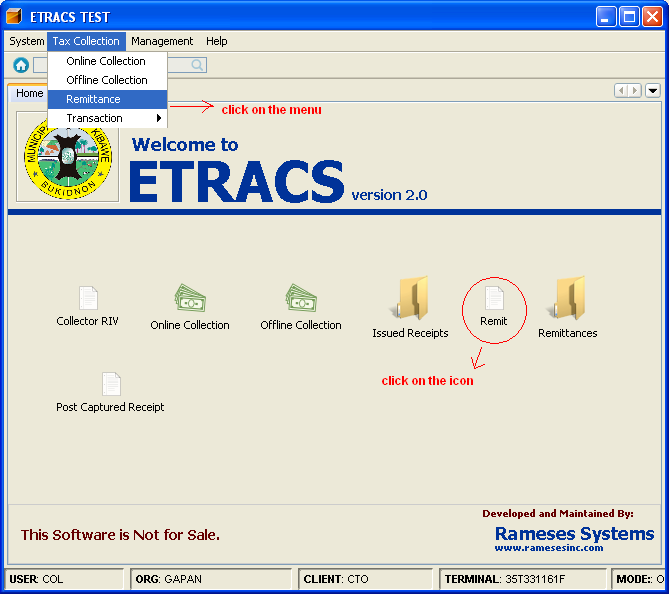
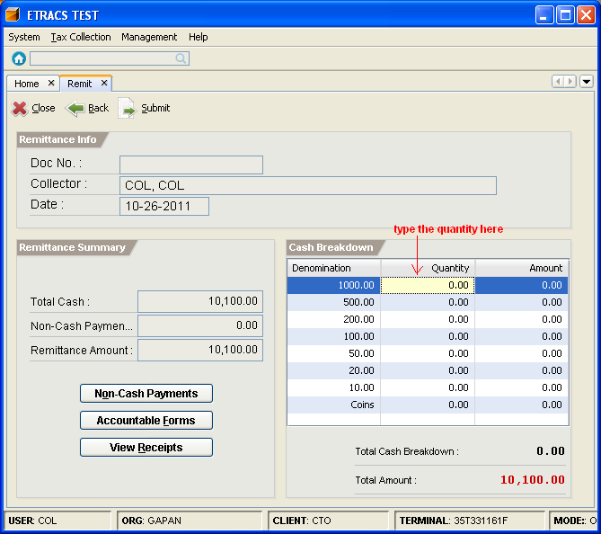
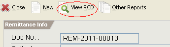
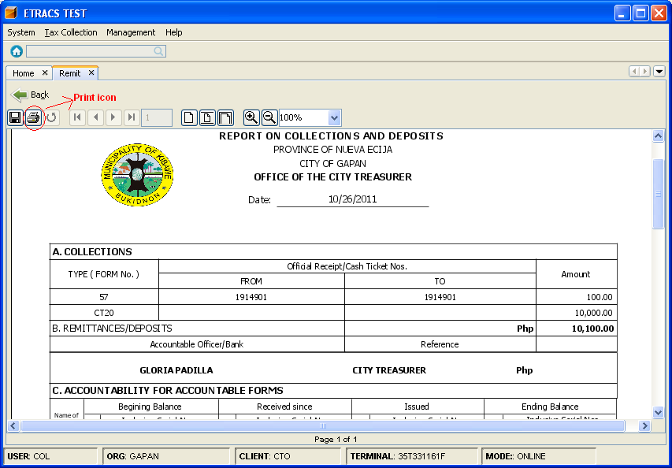
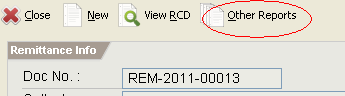
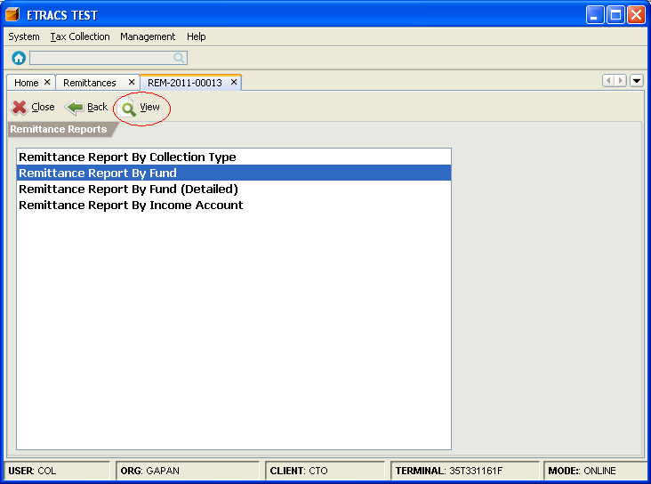
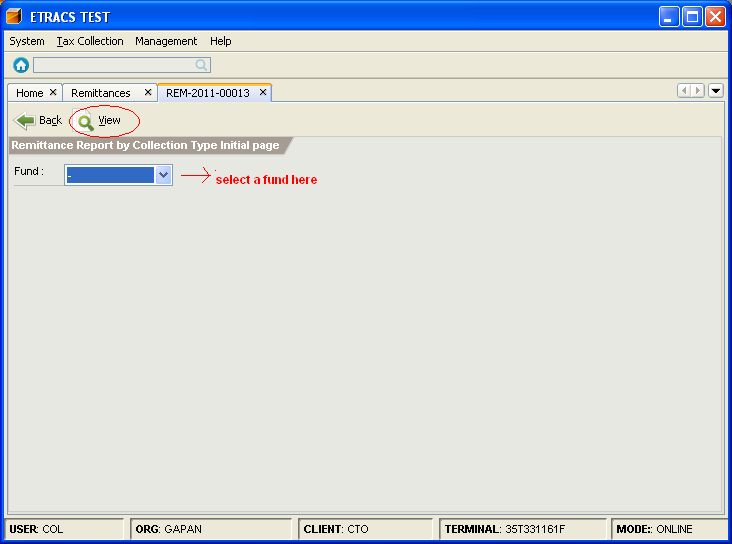

Remit Collections
This facility enables you to remit your collections, and print supporting documents such as Reports
of Collection and Deposits and other reports that are supported by the system.
How to remit?
1. On the menu toolbar, go to "Tax Collection -> Remittance" item.
You can also click on the "Remit" icon from the home page.

2. Do the cash breakdown. Total Cash Breakdown must be equal to the Total Amount of cash.
To view the collected checks, click on the "Non-Cash Payments" button.

3. Click on the "Submit" button.
4. Click on the "View RCD" button to preview the reports of collection and deposits.

5. Click on the "Print" icon to print the RCD.

6. Click on the "Back" button.
7. Click on the "Other Reports" button.

8. To preview remittance report by fund, select "Remittance Report By Fund" item.
Then, click on the "View" button.

9. Select a fund, and click on the "View" button to preview remittance report by selected fund.
(To select all funds, select the "-" value)

10. Click on the "Print" icon to print the report.